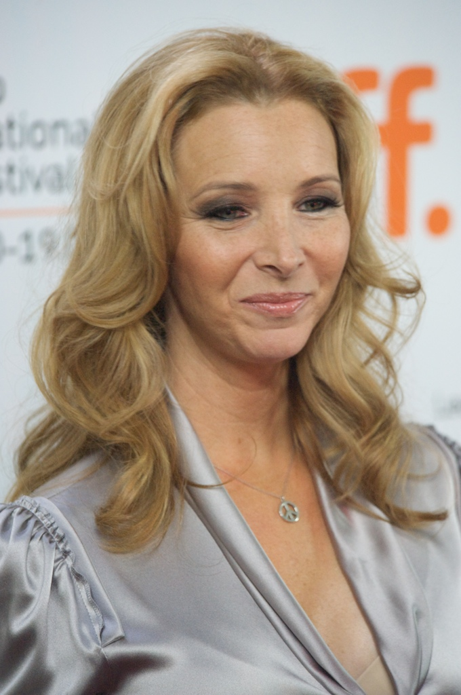
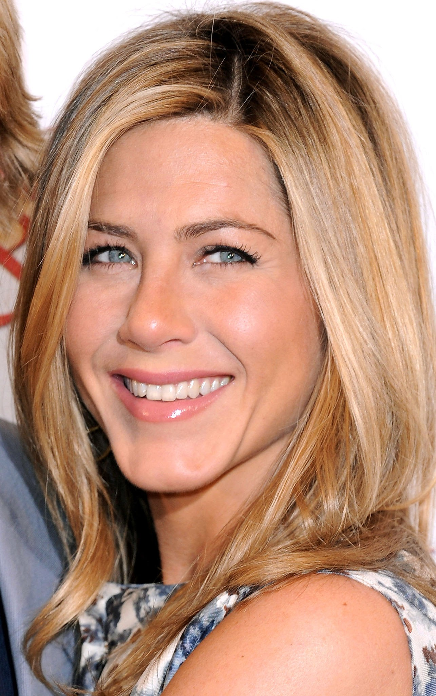

| Jennifer Aniston |
A fashion enthusiast and Monica Geller's best friend from childhood. Rachel first moves in with Monica in season one after nearly marrying Barry Farber. Rachel and Ross Geller are later involved in an on-again, off-again relationship throughout the series. Rachel dates other men during the series, such as an Italian neighbor, Paolo, in season one; Joshua Bergin, a client from Bloomingdale's, in season four; Tag Jones, her assistant, in season seven; and Joey Tribbiani in season ten. Rachel's first job is as a waitress at the coffee house Central Perk, but she later becomes an assistant buyer at Bloomingdale's in season three, and a buyer at Ralph Lauren in season five. Rachel and Ross have a daughter named Emma in "The One Where Rachel Has a Baby, Part Two" at the end of season eight. In the final episode of the series, Ross and Rachel confess their love for each other, and Rachel gives up a job in Paris to be with him |
 |
| Courteney Cox |
The mother hen of the group and a chef,[17] known for her perfectionist, bossy, competitive, and obsessive-compulsive nature.[18][19] Monica was overweight as a child. She works as a chef in various restaurants throughout the show. Monica's first serious relationship is with a long-time family friend Richard Burke, who is twenty-one years her senior. The two maintain a strong relationship for some time until Richard expresses that he does not want to have children. Monica and Chandler later start a relationship after spending a night with each other in London in the season four finale, leading to their marriage in season seven and adoption of twins at the end of the series. |
 |
| Lisa Kudrow |
A masseuse and self-taught musician. As a child, Phoebe lived in upstate New York with her mother, until she committed suicide and Phoebe took to the streets. She writes and sings her own strange songs, accompanying herself on the guitar. She has an identical twin named Ursula, who shares Phoebe's traits. Phoebe has three serious relationships over the show's run: David, a scientist, in season one, whom she breaks up with when he moves to Minsk on a research grant; Gary, a police officer whose badge she finds, in season five; and an on-and-off relationship with Mike Hannigan in seasons nine and ten. In season nine, Phoebe and Mike break up due to his desire not to marry. David returns from Minsk, leading to the two getting back together, but she eventually rejects him for Mike when both of them propose to her. Phoebe and Mike marry in season ten |
 |